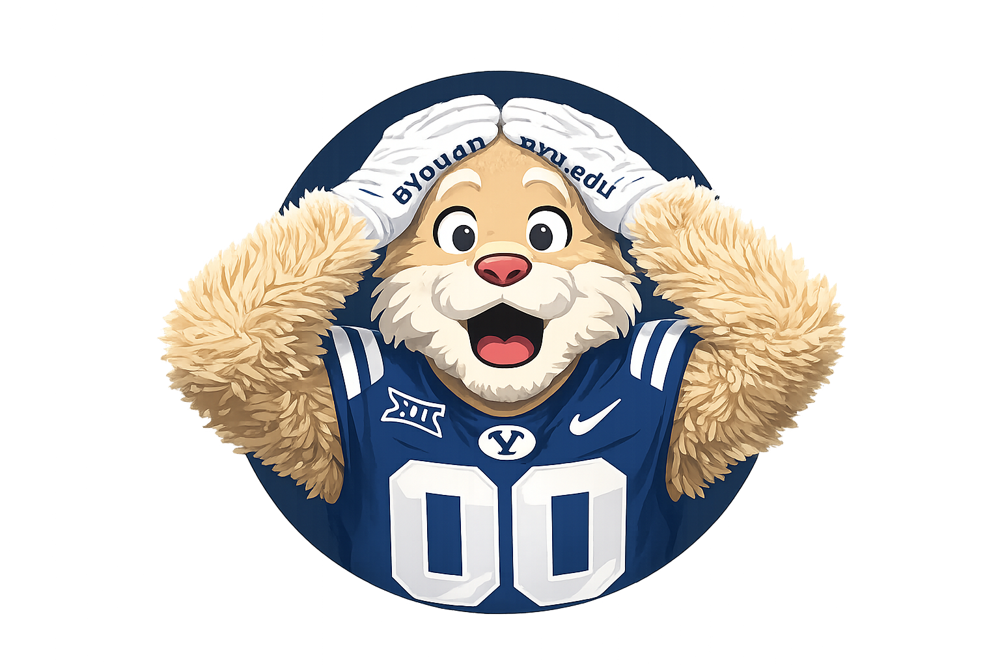

Son, Brother, Disciple, Student
I grew up in the Bay Area and later moved to Idaho during my teenage years. I graduated from Eagle High School in 2023, began studying at Brigham Young University in 2023, and also left that year to serve a mission for The Church of Jesus Christ of Latter-day Saints.
This website is my IS 201 final web development project. It includes a Bootstrap-based main page, a Tableau page, a YouTube page, and an AI-assisted web app game.
One of the most important things I learned in this course is that difficult technical concepts become manageable when I am willing to keep working and improving step by step.
For this class project, I chose not to include personal contact details online.